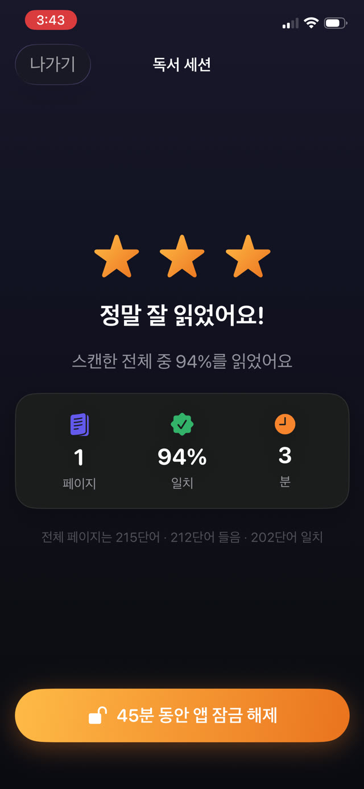

관련된 모두가 이 일이 일어난다는 걸 압니다. 그 기록이 실제로 무엇을 위한 것인지 이해할 필요가 있습니다. 답에 따라 얼마나 공을 들일 가치가 있는지가 달라지기 때문입니다.


선생님이 실제로 찾는 것
대개 책 제목은 아닙니다. 독서 기록은 하나의 질문을 대신합니다. 이 아이가 집에서 꾸준히 읽고 있는가. 학생 서른 명에 선생님 한 명이면 직접 관찰은 불가능하니 기록이 그 자리를 대신합니다.
그러니 쓸모 있는 신호는 빈도와 꾸준함이지 문학적 가치가 아닙니다. 서로 다른 열두 번의 저녁에 20분씩이, 토요일의 네 시간보다 선생님에게 훨씬 많은 것을 말해 줍니다.
종이 기록이 허구로 흘러가는 이유
- 지나고 나서 쓰는데, 지난주 화요일의 읽기에 대한 사람의 기억은 거의 쓸모가 없습니다.
- 읽기가 일어난 바로 그 순간에 부모가 곁에 있고 시간이 있었다는 것을 전제로 합니다.
- 평가받는 사람이 스스로 보고하는데, 어떤 측정 체계에서도 문제가 되는 부분입니다.
- 사실만큼이나 쉽게 의도도 기록되고, 나중에는 아무도 그 둘을 구분하지 못합니다.
정직한 기록에 담기는 것
기록을 쓸 거라면, 기억으로는 복원할 수 없는 것들을 남기게 하세요.
- 각 세션의 날짜와 시각. 날짜만이 아니라.
- 실제로 얼마나 걸렸는지. 얼마나 걸릴 예정이었는지가 아니라.
- 무엇을 읽었는지. 책, 그리고 가능하면 그 대목까지.
- 직접 그은 체크가 아니라, 읽기가 일어났다는 증거.
기록을 자동으로 만들기
가장 믿을 만한 기록은 아무도 채우는 걸 기억할 필요가 없는 기록입니다. 기록이 읽기 자체의 부산물이라면 어긋날 수도, 나중에 메울 수도 없고, 일요일 밤의 정직함에 기대지도 않습니다.
부풀려진 기록의 어색함도 사라집니다. 기록을 믿는 선생님은 그걸 근거로 움직일 수 있지만, 장식이라고 의심하는 선생님은 무시할 것이고, 그러면 헛수고였던 셈입니다.
선생님께 드릴 PDF 내보내기
Guardian Reader는 모든 읽기 세션을 자동으로 보관합니다. 날짜와 시각, 쪽수, 분, 일치율, 그리고 아이가 실제로 소리 내어 읽은 본문까지.
Premium은 그 전부를 기록 탭에서 PDF로 내보냅니다. 메일로 보내거나 인쇄할 준비가 된 상태로요. 마지막 순간에 떠올린 것이 아니라 검증된 세션에서 만들어진, 집에서의 연습에 대한 진짜 기록입니다.
검증된 읽기로 만들어진 기록
각 세션이 진행되는 동안 스캔한 쪽과 대조되기 때문에, 이 기록은 읽기에 대한 주장이 아닙니다. 읽기의 부산물입니다. 바로 그 차이가 이 파일을 학교에 건넬 가치가 있게 만듭니다.